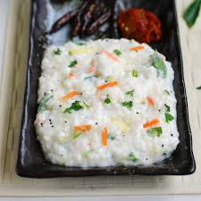

Curd Rice

Curd rice is a simple, comforting dish made with yogurt and rice. It is often served with a tempering of spices and herbs. Here’s how you can prepare it:
Ingredients:
- For Rice:
- 1 cup cooked rice
- 1/4 cup plain yogurt (curd)
- 1/2 cup water (adjust for consistency)
- Salt to taste
- For Tempering:
- 1 teaspoon oil
- 1/2 teaspoon mustard seeds
- 1/4 teaspoon cumin seeds
- 1/2 teaspoon urad dal (split black gram)
- 2-3 dried red chilies
- A few curry leaves
- 1/4 teaspoon hing (asafoetida)
- 2 tablespoons chopped coriander leaves (optional)
Instructions:
-
Mix Rice and Yogurt:
- Place the cooked rice in a large bowl. Add yogurt and water, and mix well.
- Adjust the consistency by adding more water if needed. Add salt to taste.
-
Prepare Tempering:
- Heat oil in a pan and add mustard seeds. When they splutter, add cumin seeds, urad dal, dried red chilies, curry leaves, and hing.
- Fry for a few seconds until the spices release their aroma.
-
Combine:
- Pour the tempering over the curd rice and mix gently.
- Garnish with chopped coriander leaves if desired.
Serving:
Serve curd rice as a light meal with pickle or papad on the side. It is often eaten at the end of a heavy meal to aid digestion. 😊